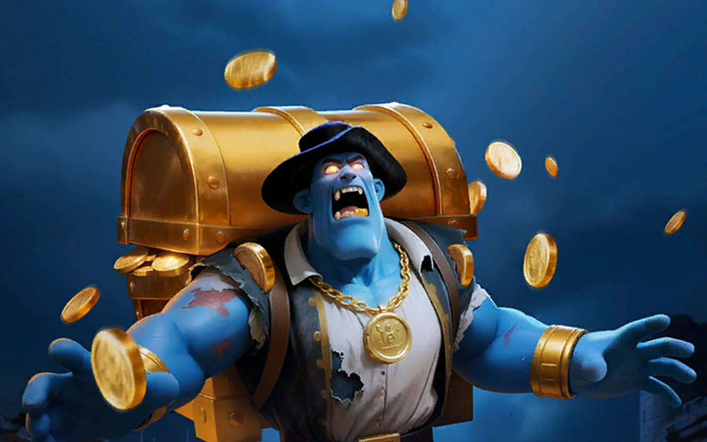
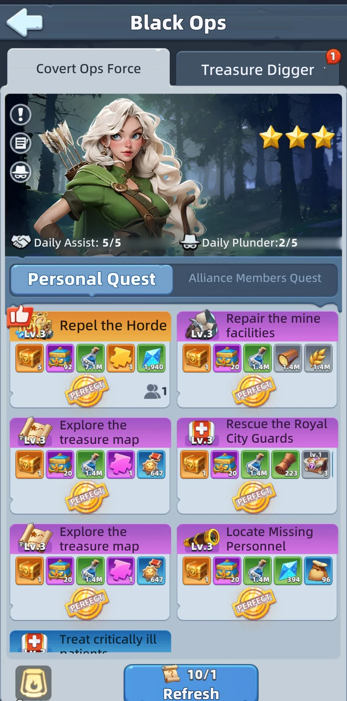
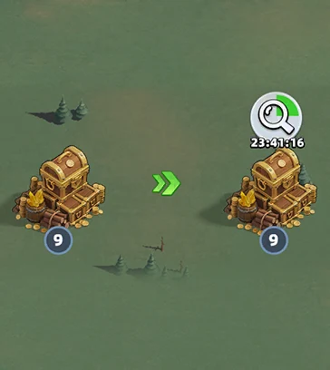
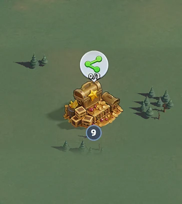
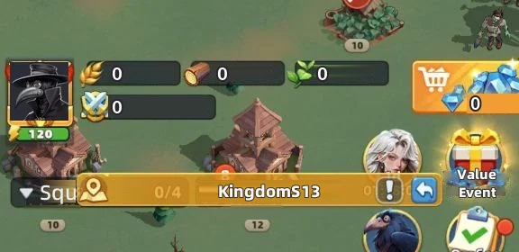
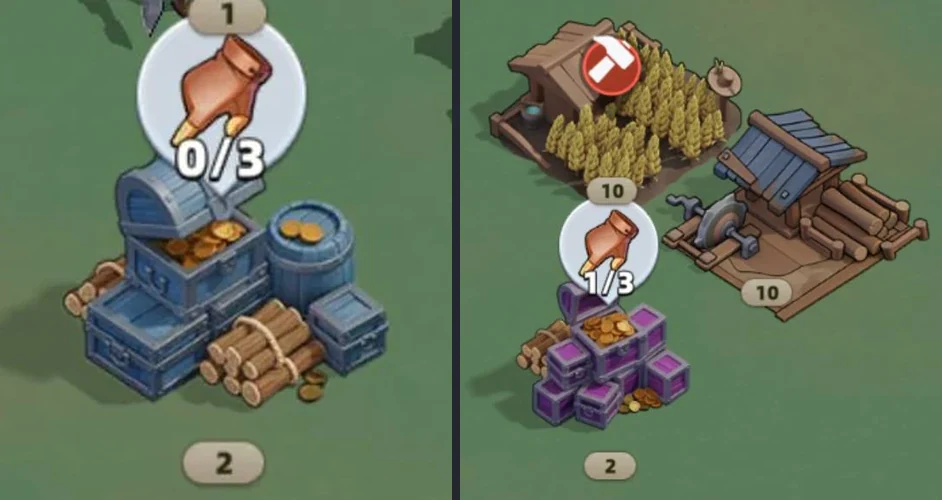
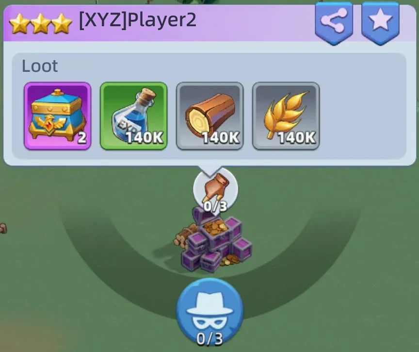
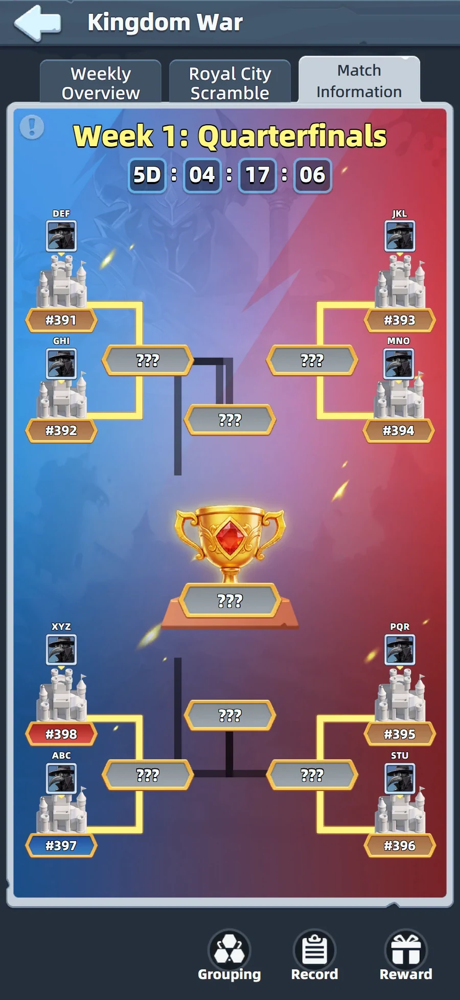
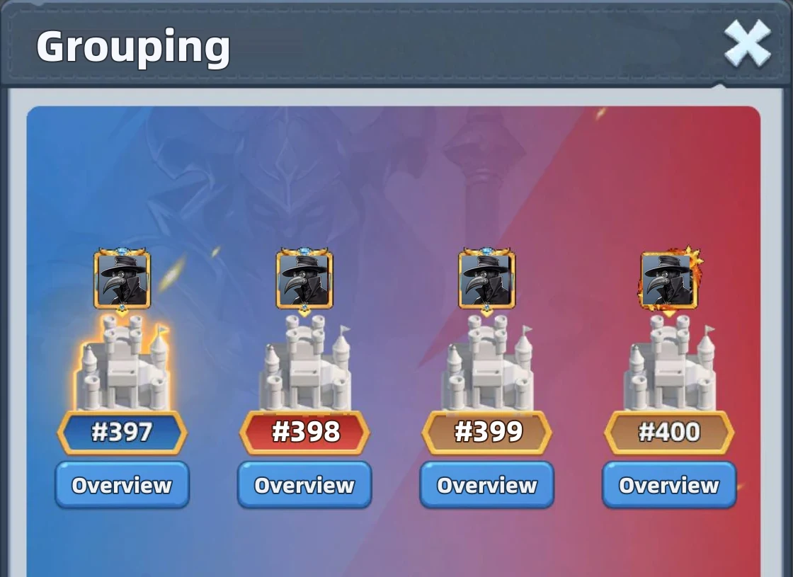
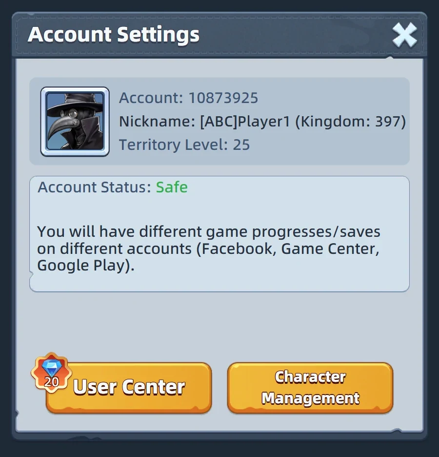

Kingdom 397 rules
Kingdom 397 rulesWe don't rob our own. We only plunder other kingdoms
Caravans and Covert Operations of players from our kingdom 397 are off limits. You may only plunder players from other kingdoms. Below: where to tick the checkbox and how to get to another kingdom.

Caravans of 397 — no
The «Exclude caravans from this server» checkbox is always on.

Covert Operations of 397 — no
We only plunder while we are on another kingdom's map.

4 plunders a day
The «Today's Plunders: 0/4» counter is at the top of the caravan window.

In Kingdom War — the enemy kingdom
Every caravan of theirs we plunder = +120 points for our kingdom.
Our kingdom rules
1. We don't plunder our own kingdom's caravans
Not another alliance, not solo players — nobody from kingdom 397. The caravan window always has the checkbox that hides them.
2. We don't plunder our own kingdom's Covert Operations
Only those of players from other kingdoms. Helping allies is allowed and encouraged.

3. Robbed one of ours by accident — tell us right away
Post the Battle Report in the alliance chat and to the leader. Don't take revenge yourself — leaders settle disputes.
4. During Kingdom War we plunder the enemy kingdom
Every one of their carts we plunder brings points to our kingdom. How to get there — below.
Where the «leave our own alone» checkbox is — step by step
Tap a screenshot to see it full screen.

Tap the cart button
It is on the left, in the column of round buttons, second from the top. The Caravan Trade window opens.

The «Other's Caravan» tab
Tabs at the top of the window:
- Other's Caravan — other players' carts, you can plunder them. This is the one you need.
- My Caravan — your carts.
- Trade Caravan — the alliance caravan with a Coachman and Passengers.
The «Exclude Caravans from your Kingdom» checkbox
It is right under the «Today's Plunders» line. The green checkmark must be on. Then carts from our kingdom 397 are not shown in the window, and you can't rob one of ours by accident.
No checkmark — tap the little box. Never untick it.

Tap a cart — a card appears at the bottom
At the top of the card is the name: «#398 [XYZ]Player». Here #398 is the kingdom number, the alliance is in brackets, then the name. On the right is the cart itself, below it — what it carries.
If the kingdom number is not 397 — tap the red Plunder button.
What to know about plundering
4 successful plunders a day. A failed attack does not use up an attempt. A successful plunder takes 3 random cargo items. A personal cart can be plundered 2 times, an alliance one 3 times. In a fight at a personal caravan troops are neither killed nor wounded.
How to keep yours from being plundered
Put your strongest squad on guard. A cart travels 4–5 hours. Refresh it with Trade Agreements: after 5 refreshes it becomes gold. Keep the gold one until Tuesday — Duel day 2, that's 100,000 points. The backup day is Saturday.
Covert Operations: what they are and whom you may plunder
A Covert Operation is a timed quest. You send heroes, wait, and collect the reward (often Antitoxin and shards). The squad does not take up a march slot: each march queue runs 2 quests at once. The button is right under the caravan button; the window is called Black Ops.
The window has two tabs: Covert Ops Force (quests) and Treasure Digger (map shards). Above the quests are «Daily Help: 5/5» and «Daily Plunder: 2/5»: how many times today you have already helped allies and plundered others. Below are «Personal Quest» / «Alliance Members Quest» and the quest cards: the stripe color is the rarity (blue, purple, gold), the rewards are under it, a thumbs-up marks the most profitable one.


How to refresh quests profitably
While at least one quest has not been started, you can tap refresh: the chance of a blue quest is 68%, purple 24%, gold 8%. A red star on a quest means it is already the best and cannot be refreshed.

Don't refresh for no reason. The Alliance Duel has a day when points are given only for gold Covert Operations (75,000 each). So save your Covert Orders to roll a gold one for that day and keep the gold one until Tuesday, instead of spending them on blue and purple ones.

«Black Ops». Frames: how many plunders are left today and «Refresh».
What your Covert Operation looks like on the map





Collect on time. The game says: «When the countdown for the Covert Operation is less than 10m, it will be visible to everyone». From that moment it can be plundered — so don't leave a finished operation on the map.
 purple
purple goldcrate color is the quest rarity (the «pricier» the color, the better the loot)
goldcrate color is the quest rarity (the «pricier» the color, the better the loot)How to plunder Covert Operations — from the very beginning
You can only plunder on the map of another kingdom. The easiest way to get there is through a caravan — that's what we do.
Open the caravans
The round button with a cart on the left of the main screen → the «Caravan Trade» window → the Other's Caravan tab.
Check the checkbox
«Exclude Caravans from your Kingdom» — the green checkmark must be on. Then the list only has other kingdoms' carts, and you won't hit your own.
«Plunder» on another kingdom's cart
Tap a cart whose kingdom number is not 397 and the red Plunder button. After the plunder the game moves you to the map of the kingdom the cart is traveling through.

You are in another kingdom
At the top is a yellow «Kingdom» bar with a number (S13 in the picture) — so all the Covert Operations around are someone else's. To go home — the blue arrow on the right of that bar.

Find the crates on the map
From afar a Covert Operation is a stack of crates with a number (the level). The color is the quest rarity: blue, purple, gold (gold ones have the best loot). Yellow pyramids are resources, red skulls are monsters.

Zoom in — there is a hand above the chest
A circle with a hand — this operation can be plundered. The number under the hand is how many times it has already been plundered: «0/3» — never, «1/3» — once. One operation can be plundered at most three times. A handshake instead of a hand is an ally's operation; you can only help it.

Tap the hand — check the loot and plunder
At the top are the owner and stars (quest difficulty), below is Loot — what you will get. The blue button with a mask under the chest is the plunder itself: tap it and send your heroes.
5 plunders a day — spend them on purple and gold ones. The owner gets a theft report, so collect your own operations on time.
Why only from another kingdom's map. Caravans have a «hide our own» checkbox, but Covert Operations don't. So the rule is simple: on our own kingdom's map we don't touch other players' chests at all.
More ways to get to another kingdom
The main way is through a caravan; it is described above in «How to plunder Covert Operations». Below are two more.
Through the Kingdom War
The «Kingdom War» icon
A gold shield with a crown on the right of the main screen. The Kingdom War window opens.

«Match Information» → «Grouping»
Third from the top, on the right.
An icon with three circles at the bottom center. The list of kingdoms in your group opens. On the bracket our kingdom is blue, the kingdom we fight this week is red.

«Grouping» → «View» at the enemy kingdom
The window shows all kingdoms of our group. #397 on a blue plate is ours, on a red one — the kingdom we fight this week, the rest are brown. Under each is a View button: tap it under the red one — that kingdom's map opens. To return — the «home» button at the bottom left.
Through the Alliance Duel
The Alliance Duel window has Go Now (to the rival alliance's kingdom this week) and Return buttons. Handy for plundering exactly your Duel rival.
A new character in another kingdom
This is not a move, but a second character from scratch. Your main city stays where it is.
At the top left of the screen.
There can be only 1 character per kingdom. Switch between them in the same window.

Link your account (Google etc.), otherwise you can lose your progress. The game cannot move a city to another kingdom «for money» or «by password» — anyone offering that is a scammer. Never give your password to anyone.

The «Account Settings» window. «Account Status: Safe» — the account is linked. At the bottom right — «Character Management» (frame).